LL Buchanan Lake
Floating Islands
Pebbles Island... A floating island
Latest photos first, progressing back in time...
Pebbles is the daughter of Fred and Wilma Flintstone, of the Flintstones TV cartoon family, friends of Barney and Betty Rubble. Pebbles Island is 8 feet by 8 feet, plus ramps on three sides. Each year a Canadian Goose family or duck family nest on the island, and sometimes both, one after the other. In the engineering guesswork, it was made with too much floatation for the weight of the soil, so concrete blocks were added to keep the bottom of the soil in contact with the water. Wire screen protects the trees from too much goose nibbling.
2010, December...
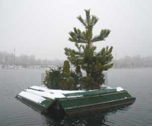
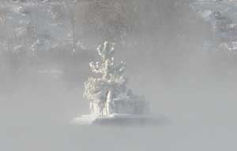
Mist rising from the water on a cold morning.
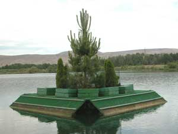
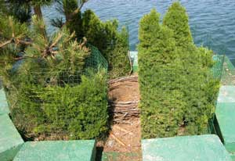
2009, May
The pine tree and the Dwarf Alberta Spruce are growing well. The Blue Spruce did not survive.
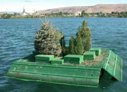
2007, June
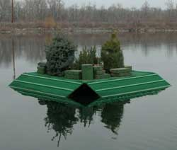
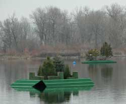
2007, March
Pebbles Island, with Barney's Island in the background.
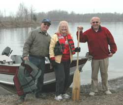
Those folks in the photo are the Pebbles crew who towed the island to the anchor position in the middle of the lake.
The anchor is made from four 5 gallon size concrete blocks.
The geese were on board within hours.
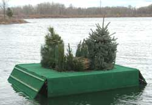
1 March. The pine tree can get to be 60 feet tall and 40 feet across, according to the information sheet that came with the tree. That should be interesting. Keep watching.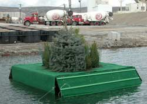
28 February. Pebbles Island was completed and launched. Ooops. Not enough soil weight for the floats. The island is floating too high. The bottom of the soil is above the top of the water. Needs weight. The engineer's resignation was accepted on site. You just can't find a good floating island engineer anymore. The resident concrete company, Central Premix, was consulted. Two cement trucks responded. The weights and measurements committee was quickly assembled for homdihooming.
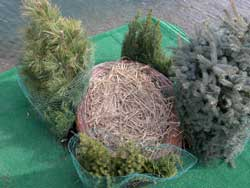
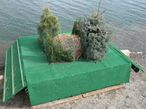
The three ramped sides are for geese. The vertical side is for the supply and tourist cruise ship docking.
The carpet was purchased from House of Carpet in Yakima. Those folks patiently assisted, and enjoyed this wild goose nest chase as much as the guy building the nest island.
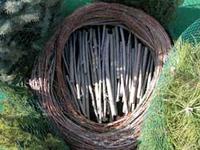
The nest is willow, bundled and wrapped with wire, with a wood floor base and a nice grass mattress.
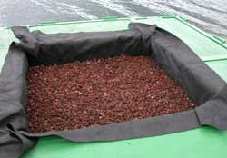
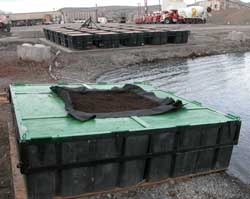
Red pumice base for the soil, in Mirifi fabric, with super secret special floating island tree growing soil blend from Morton and Sons nursery supplies.
The soil trough is 4' x 4' x 1', in the middle of an 8' x 8' x 2' array of floats.
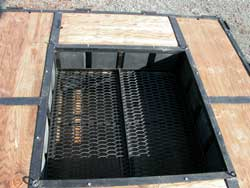
19 February. Coal Tar epoxy painted expanded steel grating base.
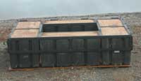
15 February. Frame and deck wood added to floats.
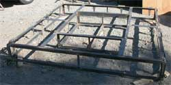
2006, May. Frame completed.
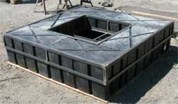
May. Test fitting floats to internal and external frame sections.
Barney's Island
Betty's Island-1
Betty's Island-2
Betty's Island-3
Betty's Island-4
Betty's Island-5
Betty's Island-6
Aerial Photos
Neighbors
History
Swans
Birds
Trees
Trees-2
Trees-3
Lake
Links